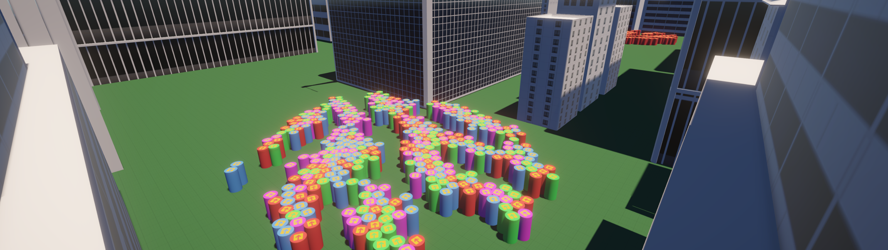
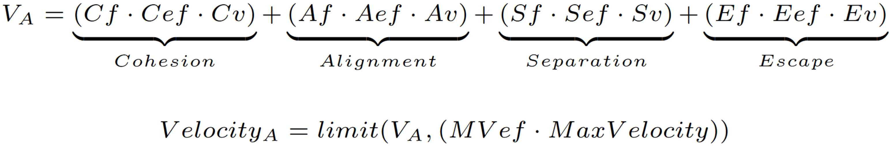

Realtime Crowd Simulation
This project compares different approaches to realtime crowd simulation. Specifically, the project focuses on comparing object-oriented approaches to data-oriented approaches (DOTS). To accomplish this, the project conducts a series of experiments using Unity's Entity Component System to simulate crowds of non-player characters.
An extended behavioral model
The simulation uses the behavioral model proposed by Craig W. Reynolds in "Flocks, Herds, and Schools: A Distributed Behavioral Model" [1]. The simulation extends the behavior of Alignment, Repulsion and Attraction according to the publication “On the Use of Virtual Animals with Artificial Fear in Virtual Environments” by Carlos Delgado-Mata [2] . Instead of fear, the simulation uses a flow-field to provide a sophisticated and directed steering behavior, which allows agents to have shared goals.
 Behavioral Model According to [2]Results
Changing the programming paradigm from object-oriented programming to a data-oriented approach improves the performance of the system significantly. The complete results as well as the program archtitecture can be found in the figure below.
Complete Results of the Conducted ResearchFuture considerations
The crowd simulation overall will greatly benefit from the inclusion of the RVO-algorithm. It would provide agents with proper avoidance. Due to time constraints and the lacking documentation of Unity's DOTS API, the simulation at hand does not include a sophisticated avoidance behavior.
To the project:
GitHub Link